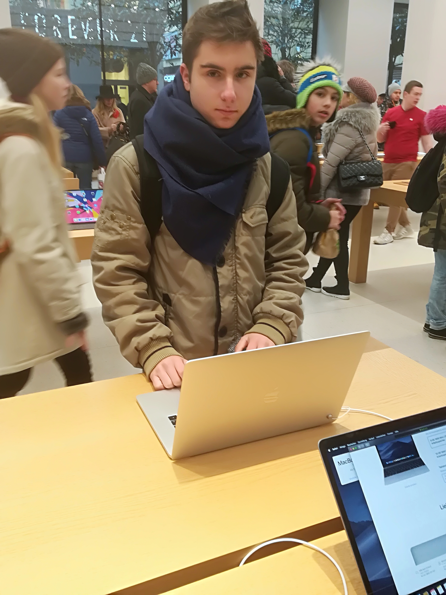

 Аз съм момче на 16 години от град София с интерес към програмирането и роботиката. Започнах да се занимавам преди 3 години със състезателна роботика и съм имал спечелени първи места в свободен стил и следене на линия на националното състезание „Робо Лига“, гр. София. Това е първата работа, за която кандидатствам. Познанията ми в IT сектора са следните:
- Programming: C#, C++ (Arduino), Python, HTML/CSS, JavaScript
- Electronics, Electrical Equipment
- Music
- Artificial Intelligence, Machine Learning